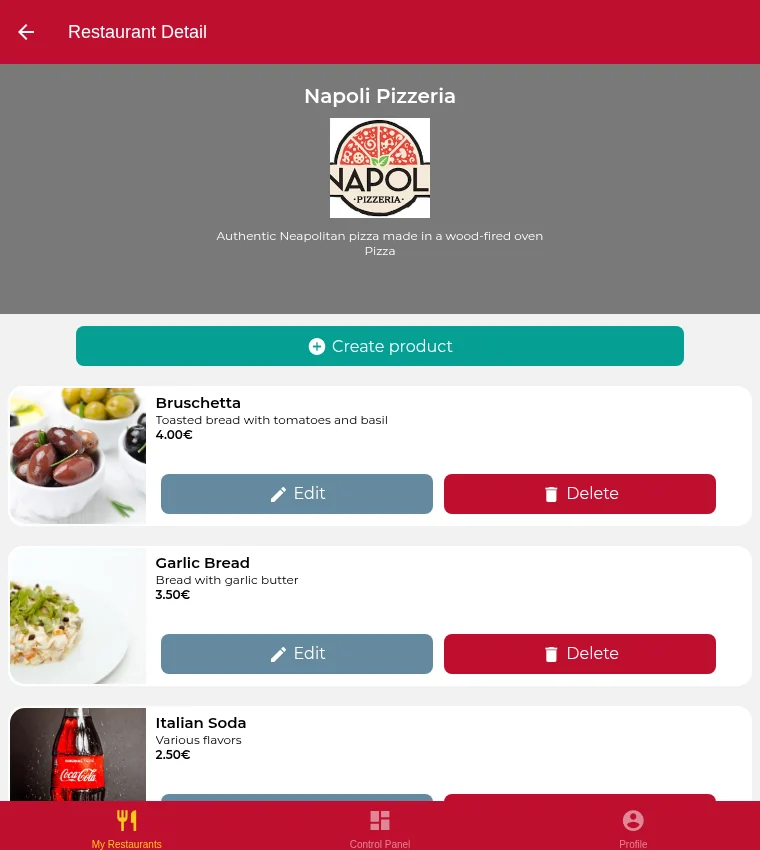

DeliverUS
Proyecto colaborativo de pedidos de restaurantes, con una aplicación para clientes y otra para propietarios.
Ver repositorioVisita visual



Proyecto colaborativo de pedidos de restaurantes, con una aplicación para clientes y otra para propietarios.
Ver repositorio
